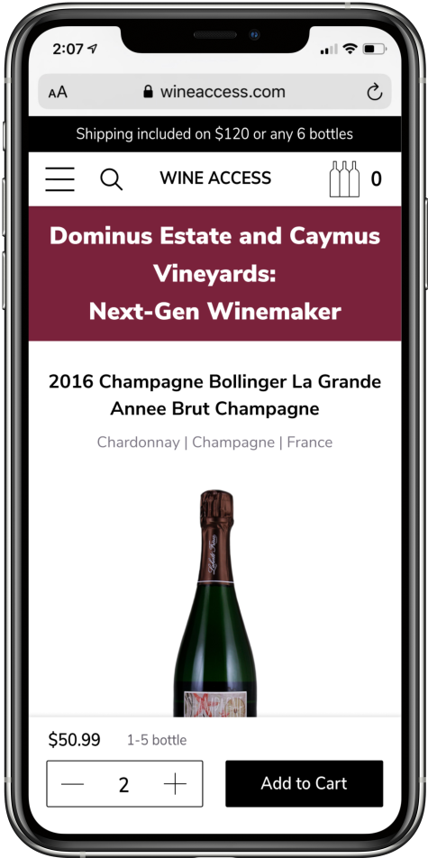

UX/UI design
Wine Access
This is a massive project of full rebranding and web redesign of an
online retailer Wine Access. I joined Wine Access in March 2019 and almost immediately
started the process of restructuring and redesigning. Being the only designer I am responsible
for all aspects of design, from conceptualization and user research, to design execution and
production, including developing wireframes, userflow diagrams, all visual elements, layouts and photographs.
My Role: Swiss army knife - UX/UI designer, user researcher, illustrator and
photographer.
Challenge
Below you can see the old version of Wine Access
homepage. It had several UI problems, such as inconsistency in fonts and buttons style,
low contrast, 'hanging' elements. More importantly it had multiple issues
with UX flow that led to user frustration.
Here are some of them:
Solution
The wine industry has long history and rich culture.
This puts additional requirements on the developed solution to respect rules
established in the industry. For example, some visual elements and colors need to
be familiar for our target audience. As a result I have incorporated all that industry
standards into the design system from the very beginning. It helped to use that
as a corner stone for all design explorations.
This newly developed design system has then been used by me to build cohesive solutions
throughout Wine Access website. You will be able to see the whole design journey from
rebuilding homepage, creating new navigation system, simplifying product card, improving
product detail page and developing various brand assets.
Style guide

Colors

Icons
Icons

Buttons

Typography
New Homepage
In order to redesign the homepage in the way that would benefit our users the most I have tried to include as much as possible users' signals into the decision making process. I have beed laveraging results of the user research and data collected from the website usage to better understand main user painpoints and needs. As a result the new homepage has several structural differences in comparison to the former one. It includes the following:
Use of a 12 column grid in order to accomodate responsive design on all device types
Sticky navigation that provides access to the store products at any time
Search option which was among the most requested features by our users
Hero carousel to keep a user focusaed on one topic at a time
Easy way to sign up for daily email with limited offers which our users don't like to miss
Surfacing weekly article which is purely unique content created by our authors

New navigation system
Product card
Product card was one of the most challenging part. The main difficulty was to find a way to show all the information that we have and need to present. I started with the most heavy and unorganized version trying to clean my way out and make a card that is easy to scan by users and motivates to proceed with action. Below you can folow my process of improving the product card and the final version of it. In order to show the most dramatic case I provide variants of card with tiered pricing and value tag.
Challenge
1. The initial request was to keep the header image as it shows the experience.
2. Reduced image height to get some room.
3. Trying to use the negative space I moved the bottle from the center, removed score tag and used another variant of tiered pricing.
4. Bottle shot moves back to the center for a better visual balance. Two sections divided with a line.
5. Tiered pricing is hidden by default, but can be expanded. Added input stepper.
6. Completely removed image as it was causing unnecessary visual distractions.
Final version of a product card
Single price
Tiered pricing
Expanded tiered pricing
Product Detail Page (PDP)
On a PDP users can get detailed information about the wine they're purchasing. The challenge here was to display multiple criteria and quite complex information that wine geeks & collectors look for, and at the same time present it in a visually beautiful way that is also educational and helpful to those who may know little about wine.
Mobile version

Wine Clubs
One of the last parts of redesign process was to convey the idea behind each of the wine club options that we have in Wine Access that represent different membership types. In addition to highlighting difference
Standard wine club

High End wine club
Branding, illustrations and various design assets


Designed & developed by Yulia Chilikina